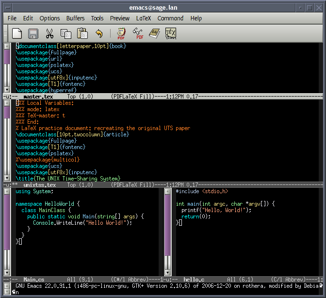

History
Overview
There are disagreements as to which was the first IDE. some believe it was TurboPascal during the 1908s, others think
it was Visual basic. Despite these disagreements, The first IDE and all which followed, have dramatically changed the
coding industry, making it a more accessible and friendly field.
Before the invention of IDEs, programs were created with paper punch cards which were read and executed by computers. After
this however, when computers became more mainstream, and peripherals such as the monitor and keyboard were invented, text editors
were used for code editing. This dramatically helped the development of programming as an industry. People could now write
code without having to be educated on how complex things like the paper punch cards worked. Text editors were not perfect however,
as they were cumbersome to use due to the number of external programs that were required to be installed before any code could be run.
After the invention of IDEs and their popularisation, almost everyone had started to relise the dramatic benefits they provided.
This led to many different companies creating their own IDEs such as atom, BASIC, pascal and a variety of others. The competition
with all these new IDEs pushed companies to make their versions better. This continues today, giving us access to the great tools we have today.
things such as plugins most likely wouldnt have been included in most IDEs if there wasnt competition for them to be introdced.
plugins help with customisation and personalisation. these two things can help a developer maximising their work effort.
comaprison of old Vs new
 This image shows an example of an old IDE. It clearly has features and looks usable, but it could be better.
 This is an image of how it looks like to program in VS code. it is clearly more refined than the older IDE.
it has a task bar on the left with version control and a plugin marketplace. These two features alone make an IDE far better.
This is an image of how it looks like to program in VS code. it is clearly more refined than the older IDE.
it has a task bar on the left with version control and a plugin marketplace. These two features alone make an IDE far better.
It is evident how much IDEs have progressed since their early days. The difference between the two above IDEs is notable, I would much prefer to use VS code over the older IDE pictured as it clearly is a much better product. Both IDEs will have been instrumental in improving the programming experience of the users, VS code however, is most likely more versatile and it is also obviously easier to use and from initial looks, it has more obvious features, which if used correctly make the IDE brilliant.